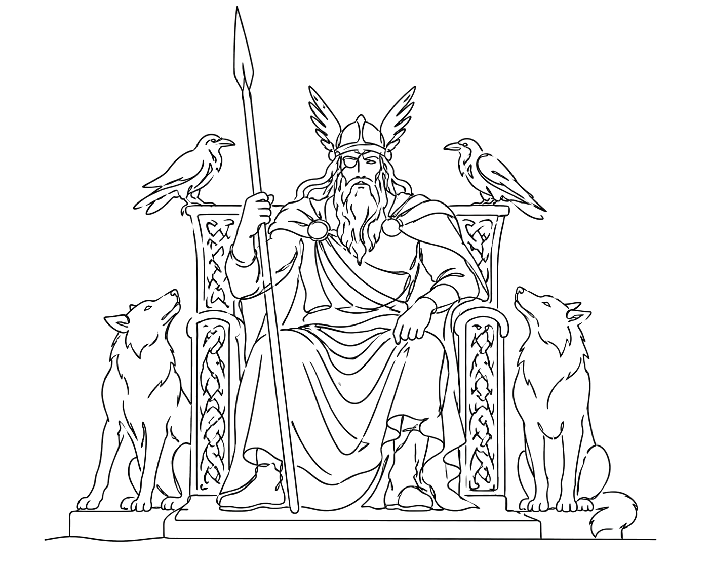

Wusstest du schon?
Odin sucht Wissen, auch wenn es ihn etwas kostet.
Nordische Mythologie
Freya: Göttin der Liebe, Schönheit, Magie und Macht in der nordischen Mythologie.
Wikingerwissen verständlich erklärt
Die nordische Mythologie ist einer der spannendsten Zugänge zur Wikingerzeit. Ihre Götter sind nicht perfekt: Sie zweifeln, kämpfen, tricksen, opfern und geraten selbst in Gefahr.
Freya ist deshalb ein gutes Einstiegsthema: Freya verbindet Schönheit und Stärke, Liebe und Krieg, Magie und Selbstbestimmung.
Viele Mythen wurden lange mündlich weitergegeben und erst später schriftlich festgehalten. Deshalb muss man sie vorsichtig lesen: Sie zeigen Vorstellungen, Werte und Erzähltraditionen, aber nicht eins zu eins den Alltag aller Wikinger.

Kurz & spannend
Odin sucht Wissen, auch wenn es ihn etwas kostet.
Thor schützt Menschen und Götter mit seinem Hammer Mjölnir.
Ragnarök beschreibt Untergang und Neubeginn zugleich.
Museum Saarbrücken
Im SAARVIK Museum verbindet Mythologie emotionale Geschichten mit historischer Einordnung. So wird sichtbar, wie Erzählungen Identität und Weltbilder prägen konnten.
Statt nur Jahreszahlen auswendig zu lernen, entsteht ein Zusammenhang: Objekte, Bilder, Karten, Geschichten und interaktive Stationen machen die Wikingerzeit greifbar. Gerade deshalb eignet sich das Thema für Familien, Schulklassen und alle, die Geschichte nicht trocken, sondern anschaulich erleben möchten.
Wer tiefer einsteigen möchte, findet auf dieser Website weitere Artikel zu Runen, Schiffen, Kleidung, Waffen, nordischen Göttern und Ausflugsideen im Saarland.
Freya verbindet Schönheit und Stärke, Liebe und Krieg, Magie und Selbstbestimmung.
Je nach Thema gibt es archäologische Funde, schriftliche Quellen, spätere Überlieferungen oder Rekonstruktionen. Wichtig ist, moderne Klischees von historischer Einordnung zu trennen.
Weil es einen Zugang zur Wikingerzeit eröffnet: über Alltag, Glauben, Reisen, Handwerk, Schrift, Handel oder Erinnerungskultur.